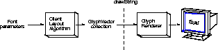

| CONTENTS | PREV | NEXT | Java 2D API |
The GlyphVector class provides a way to display the results of custom layout mechanisms. A GlyphVector object can be thought of as the output of an algorithm that takes a string and computes exactly how the string should be displayed. The system has a built-in algorithm and the Java 2DTM API lets advanced clients define their own algorithms.A GlyphVector object is basically an array of glyphs and glyph locations. Glyphs are used instead of characters to provide total control over layout characteristics such as kerning and ligatures. For example, when displaying the string "final", you might want to replace the leading fi substring with the ligature fi. In this case, the GlyphVector object will have fewer glyphs than the number of characters in the original string.
Figure 4-13 and Figure 4-14 illustrate how GlyphVector objects are used by layout mechanisms. Figure 4-13 shows the default layout mechanism. When drawString is called on a String, the built-in layout algorithm:
Figure 4-14 shows the process for using a custom layout algorithm. To use a custom layout algorithm, you must assemble all of the information necessary to lay out the text. The basic process is the same:
To render the text, you pass the GlyphVector to drawString, which in turn passes it to the glyph renderer. In Figure 4-14, the custom layout algorithm replaces the fi substring with the ligature fi.